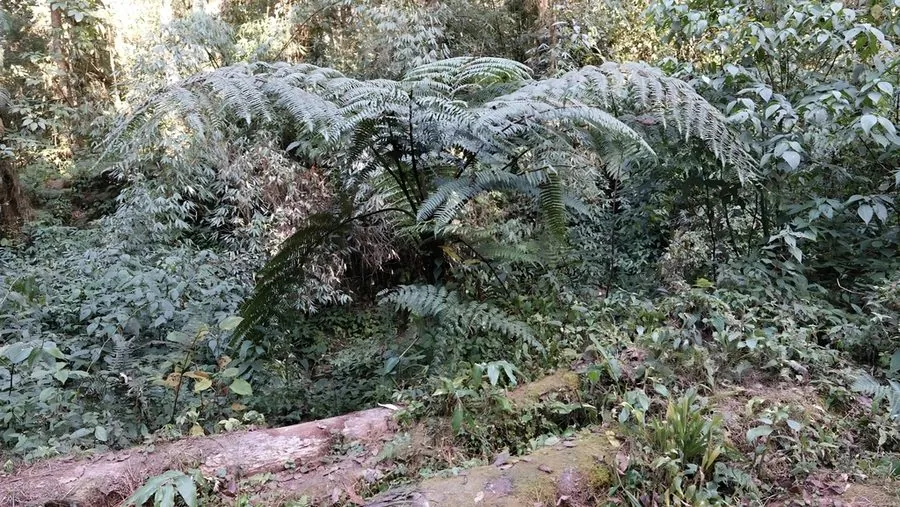

蕨类与裸子植物 · 植物界
云南桫椤 Alsophila khasyana

桫椤科桫椤属树蕨，主干中等、叶柄深色，分布于云南与西藏的热带山地，是国家二级重点保护野生植物。
- 分类
- 门蕨类植物门纲木贼纲目桫椤目科桫椤科属桫椤属
- 栖息环境
- 海拔 800–1500 米的热带山地常绿阔叶林与沟谷，喜温暖湿润
- 地理分布
- 中国云南西部与西藏东南部；印度、缅甸也有分布
- 保护级别
- 中国国家二级保护野生植物；森林砍伐使野生种群下降
物种志
云南桫椤为中型树形蕨类，主干直立，高 2–4 米，直径 8–15 厘米，表面具叶柄疤痕。叶簇生主干顶端，二回羽状，长 1.5–2.5 米，叶柄深色，基部被鳞片，幼叶拳卷。孢子囊群圆形，生于小脉分叉处，成熟时褐色。
本种分布于中国云南西部与西藏东南部，也见于印度、缅甸，生于海拔 800–1500 米的热带山地常绿阔叶林与沟谷，喜温暖湿润、散射光充足的环境。它是云南热带山地常见的树蕨之一，主干中等、叶形优美，常生于溪边与林下。云南桫椤对生境变化敏感，森林砍伐与人为采挖使其野生种群下降，桫椤科所有种均被列为国家二级保护野生植物。
形态与习性
- 株高主干高 2–4 米，直径 8–15 厘米
- 叶二回羽状，长 1.5–2.5 米
- 孢子孢子囊群圆形，生于小脉分叉处
- 光照喜散射光，忌强光直射
- 水分喜高湿，溪边与沟谷生长良好
- 土壤疏松肥沃的酸性壤土
- 主要用途园林观赏、蕨类研究与种质保护
趣味知识
- 云南桫椤的模式产地与主要分布区都在云南，因此以“云南”命名。
- 它的主干高度介于黑桫椤与白桫椤之间，是中等体型的树蕨。
- 云南桫椤常生于热带山地沟谷的溪边，那里空气湿度常年很高。
- 它和所有桫椤科植物一样，是研究蕨类演化的重要材料。